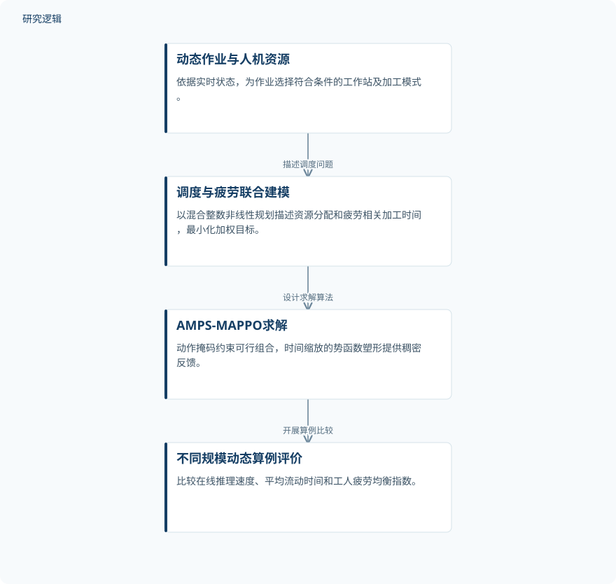

摘要解读
考虑人机协作与工人疲劳的动态并行机调度多智能体强化学习
Multi-Agent Reinforcement Learning for Dynamic Parallel-Machine Scheduling with Human–Robot Collaboration and Worker Fatigue
解读更新 2026-10-26 23:36 · 依据公开摘要整理，未核验全文细节
动态到达的作业如何及时分配，又不让工人的疲劳负担过度集中？这项研究将人机协作调度与工人疲劳管理放进同一优化目标，用多智能体强化学习协调生产响应与疲劳均衡。
文章目录
调度不仅要及时，还要考虑谁更疲劳
研究面向具有人机协作的动态并行机调度：作业持续到达，系统依据实时状态，将其分配到符合条件的工作站，并选择工人、机器人或人机协作进行加工。这里的“疲劳”指工人疲劳，而非结构材料的疲劳损伤。
有工人参与的加工模式能够提高运行灵活性，但疲劳积累可能延长实际加工时间，并造成工人之间的疲劳分布不均。作者因此将平均流动时间与工人疲劳均衡指数加权组合并最小化，使生产响应与疲劳管理共同进入调度目标。
先建模约束，再让策略学习可行决策
作者建立混合整数非线性规划模型，描述动态作业到达、可选加工模式、工人与机器人分配，以及依赖疲劳状态的加工时间。模型将资源选择与疲劳影响联系起来，而不是把加工时间视为不受疲劳影响的固定条件。
在此基础上，研究设计了动作掩码与势函数塑形相结合的多智能体近端策略优化算法AMPS-MAPPO。动作掩码将策略采样限制在结构上可行的“作业—模式—资源”组合内；时间缩放的势函数塑形则为长时域学习提供稠密反馈。
依据摘要整理的人机协作调度研究过程


仅概括摘要明确陈述的问题、建模、算法与评价关系，不代表论文原图或完整实验配置。
下载 SVG图示关系说明
实线表示相邻阶段的信息流，虚线表示跨阶段联系或反馈。
动态作业与人机资源 → 调度与疲劳联合建模：描述调度问题；调度与疲劳联合建模 → AMPS-MAPPO求解：设计求解算法；AMPS-MAPPO求解 → 不同规模动态算例评价：开展算例比较
摘要报告流动时间下降与疲劳指标优势
在不同规模的动态算例上，摘要报告AMPS-MAPPO实现了毫秒级在线推理。其平均流动时间相对表现最佳的派工规则基准降低40.98%，相对深度强化学习基线降低8.17–20.92%。两组降幅对应不同的比较对象，不能混为同一基准下的收益。
在参与比较的深度强化学习算法中，AMPS-MAPPO还取得最低的总体工人疲劳均衡指数。这一结果支持其在所报告比较中的指标优势，但不能直接解释为所有工人的疲劳都下降，也不等同于已经验证了健康改善。
算例设置与验证边界仍需查阅全文
摘要没有给出动态算例的具体数量与规模、作业到达设置、疲劳模型参数、目标权重及基线配置，因此无法仅凭当前资料判断比较条件和结果波动。毫秒级推理的硬件与计时条件、是否经过真实生产现场验证，也不能由摘要确定；这些信息未在摘要报告，并不意味着论文没有开展相关工作。
阅读启发：关注疲劳如何真正进入决策
阅读启发：后续阅读可重点追问，疲劳均衡指数如何定义，加权目标怎样体现响应速度与疲劳管理的取舍，以及动作掩码和势函数塑形各自贡献了什么。对于关注疲劳与可靠性的读者，还应保持对象边界：本文讨论的是工人疲劳与生产调度，不能直接外推为结构疲劳寿命或设备可靠性的结论。
以上为本站阅读启发与建议，不是论文已验证的结论。